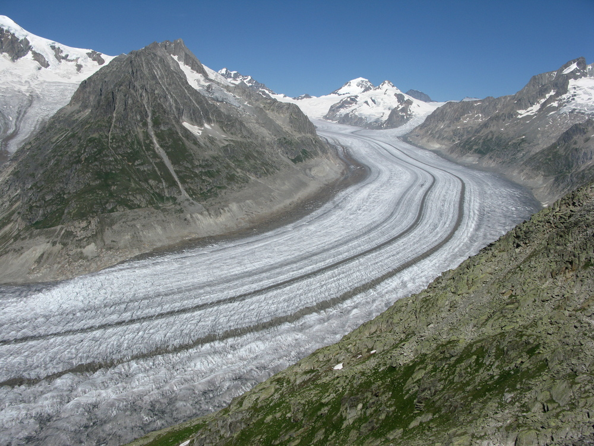

Course#
Guillaume Jouvet

Course objectives#
Provide basics of glacier processes
Introduce numerical methods to model glacier evolution
Perform pratical numerical experiments with IGM
Ressources#
If there is one ressource to remember is the awesome website : https://www.antarcticglaciers.org that can allow you to deepen the processes.
To dive more into the mechanics and the maths, I recommend the “Karthaus Summer School Lecture Notes”: https://link.springer.com/book/10.1007/978-3-030-42584-5
Content of this course#
I> Glacier processes
II> Mathematical Modelling
III> Numerical Modelling
IV> Application to paleo and present-day glaciers
V> Analogue Modelling
I > Glacier processes#
Main glacial processes governing glacier evol.#
Glacial processes governing glacier evolution#
Climatic surface mass balance (= accumulation – ablation)
Ice thermo-dynamics
Mass conservation
Subglacial hydrology
Debris / sediment transport
Mass balance processes#

Observing glacial motion#
There are a number of timelapse cameras that have captured glacial motion :
How can a glacier flow? Brief historical outlines#
How could ice remain in a warm green valley without melting?
Rhone Glacier in 1856
18th century: 1st theories (Rémy et al., 2006)
1705: Dilation of water refreezing (Scheuchzer)
1760: Basal sliding (Gruner)
1773: Ice behaves as a “fluid” (Bordier)
19th century: 1st measurements#

Ice movement of Rhone Glacier 1874–1900 (Mercanton, 1916)
➡️ Ice deformation is faster in the center and slower at the sides
20th century: From lab exp. to Glen’s flow law#
Figure from (Budd & Jacka, 1989)
1D: \(\dot\epsilon = A(T)\,\sigma^n\), where \(\dot\epsilon\) is the strain rate, and \(\sigma\) is the stress.
3D: \(\dot\varepsilon_{ij} = A(T)\,[\sigma^{(d)}_{II}]^{n-1}\,\sigma^{(d)}_{ij}\) ➡️ Ice is a non-Newtonian fluid (J. Glen, 1958)
The two components of glacier ice flow#
ICE is both: a fluid that flow/shear, and a solid that slides

Sliding of ice under Argentière Glacier#
Source: Luc Moreau
Subglacial hydrology#

Inefficient drainage → high pressure → high basal sliding
Efficient drainage → low pressure → low basal sliding
Thermic and basal glacial state#
Number of these processes are coupled#
… and deformation of lithosphere for ice fields and ice sheets
II> Mathematical Modelling#
Glen’s flow law#
1D: \(\dot\epsilon = A(T)\,\sigma^n\), where \(\dot\epsilon\) is the strain rate, and \(\sigma\) is the stress.
3D: \(\dot\varepsilon_{ij} = A(T)\,[\sigma^{(d)}_{II}]^{n-1}\,\sigma^{(d)}_{ij}\) ➡️ Ice = non-Newtonian fluid (J. Glen, 1958), n=3
Ice dynamics equations & boundary conditions#
Note that the ice flow speed is independent of time!
Shallow Ice models (since glaciers are shallow)#
Mountain glacier |
Ice sheet |
aspect ratio \(\sim 1/10\) |
aspect ratio \(\sim 1/1000\) |
Shallow Ice Approximation (SIA)#
Most simple ice flow model, velocity given by formula (\(n=3\)):
SIA is obtained by neglecting \(\mathcal{O}(\epsilon^k)\),
where \(\epsilon\) is the aspect ratio.
Valid for: thin ice, inland ice sheets, wide glaciers.
Not valid for: thick ice, ice domes, narrow glaciers, fast sliding.
Shallow Ice Approximation (SIA)#

2 (simplified) shallow ice models#
SIA (Shallow Ice Approximation) -> suitable for pure Shearing
SSA (Shallow Shelf Approximation) -> suitable for pure Sliding
Dynamics of marine ice sheets#
Dynamics of the Antartica Ice Sheet#

Ice flow field in Antarctica, the pink areas (ice shelves where the ice is floating) display the zone for the ice is the fastest. Check a the NASA website for animations.
Connecting ice flow and mass conservation#
Mass conservation: rate of change of thickness = surface mass balance (SMB)
Ice sheet evolution equation#
Combine SIA (1) with \(n=3\), and no sliding with mass conservation equation (2) leads to a nonlinear diffusive equation (given here in 1D) that predicts the evolution of the geometry of an ice sheet:
where D(h) is the dynamic diffusivity of the ice defined by
III > Numerical modelling#
Need for a numerical glacier evolution model#
Since the above equations are to complex to be solved analytically, we need a numerical model to approximate them.
Link to the course on numerical modelling.
5 min video on glacier modelling : https://youtu.be/eJNIr_0zOyk
Glacier must be meshed/discretized …#
to resolve the equations numerically.
In practise, it is common to work with simplified (shallow) models.
Transient glacier evolution computation#

Combining ice flow and mass balance models#
The above algorithm updates the glacier surface at each time step accounting for both: ice flow and surface mass balance
Numerical models#
The SIA-based equations can solved in few lines of codes, see the last courses / exercices sheets of the course on numerical modelling, you may deepen this aspect with the Karthaus Summer School Lecture Notes
There are a number of open models developped by glaciology modeller community that solves ice flow equations with different level complexity such as Elmer/Ice, PISM, ISSM, CISM, OGGM, IcePack, …
Here we will use the “Instructed Glacier Model” (IGM developed at UNIL), which is a python-based glacier evolution model that uses Machine Learning (ML) and Graphics Processing Units (GPU) to acceleratehe code computations.
IV > Present-day and paleo glacier applications#
Modelling of the evolution of Aletsch Glacier#

Key numbers: ~ 20 km long – 85 km² – 13 km³
➡️ 1880–2010 : Model validation (Jouvet and al., JOG 2010)
➡️ 2010–2100 : Multiple climate scenarios (Jouvet & Huss, JOG 2019)
Check at the simulation page
Solving a cold case with glacier modelling!#
➡️ 1226: 4 mens vanish on the Great Aletsch Glacier ➡️ 2012: The remains of 3 of them ar found ~ 10 km downstream.
What caused the fate of the mountainers? Can glacier modelling help to estimate the vanishing place?
Want to know more ? Check at the short film.
Last Glacial Maximum in the Switzerland#
Can we reproduce this with a glacier model ?
Paleo glacier modelling in the Alps with IGM#


(Leger, Jouvet and al., Nature Com., 2025)
Modelling last ice age glacier evolution in the Alps: https://youtu.be/IbLOFh3U9gI
Ice flow modelling for landscape evolution#
… to model the alternance of ice flow-driven glacial (U) and fluvial (V) erosion.


(Cordonnier, Jouvet et al., SIGGRAPH, 2023)
Simulation: https://youtu.be/xfk_J4VhdWA
V > Analogue modelling#
The “glacier goo” experiment#
https://uzh.mediaspace.cast.switch.ch/channel/Glacier-Goo-Experimente
Credit: G. Vieli, A. Vieli, A. Linsbauer (UZH, 3G)